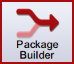
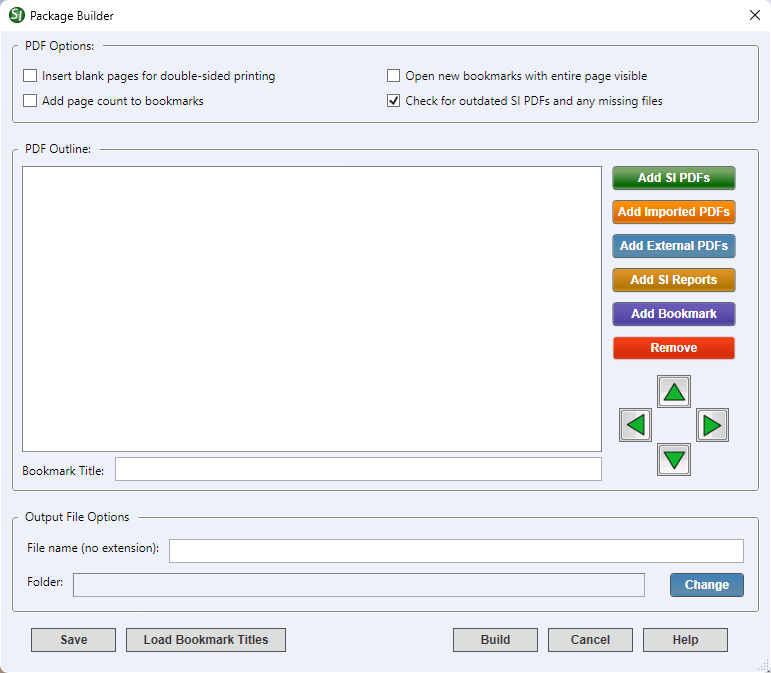

This command can also be executed from the SpecsIntact Explorer's Toolbar.
The Package Builder window offers many options for creating a comprehensive PDF package for a Job or Master. You can compile a single PDF file by adding PDF Section files, report files, and other external PDFs from outside of SpecsIntact, arranging them in any order you choose. For example, you can insert a cover sheet (e.g. COVER.PDF) file at the top of the PDF Outline.
Additional Features
- Drag and drop functionality - Easily add other project-specific PDF attachments and place them wherever you like among the Section files.
- Unlimited bookmarks - Create an unlimited number of bookmarks at different locations and levels to further enhance your compiled PDF package.

 Before adding Section PDFs to Package Builder, first generate the Sections PDFs through the SpecsIntact Explorer's File menu > Process and Print/Publish > PDF Publish tab.
Before adding Section PDFs to Package Builder, first generate the Sections PDFs through the SpecsIntact Explorer's File menu > Process and Print/Publish > PDF Publish tab.
The Package Builder window provides the following options:
- PDF Options - Provides options for customizing the final PDF package.
- Insert blank pages for double-sided printing - When checked, this option will insert a blank page with the text 'THIS PAGE INTENTIONALLY LEFT BLANK" after any odd-numbered page to ensure correct double-sided printing.
- Add page count to bookmarks - When checked, the number of pages will be added in parentheses after each bookmarked Section, report, and included PDF in the compiled PDF package. For example, within the bookmarked title for Section 01 33 00, it would appear '01 33 00 - SUBMITTAL PROCEDURES (28)'.
- Open new bookmarks with entire page visible - When checked, your PDF viewer will automatically zoom in to show the entire first page of a Section, report, or other PDF when you click on its top-level bookmark, regardless of the previous zoom level.
- Check for outdated SI PDFs and any missing files - When checked, this will alert you to any outdated PDFs since the last time you opened Package Builder. For instance, if you edited a Section, it would prompt you to not only create an updated PDF of that Section, but if you have included reports in your PDF package, it will also alert you to update those, as your edits could have affected them as well. Note that this is the only option that is checked by default when you first open Package Builder.
- PDF Outline - This is where all your added PDF files are listed. This populates automatically as you add them from various sources by using the provided Package Builder buttons.
- Bookmark Title - This field is located directly under the PDF Outline pane and displays the title of the PDF file that is currently selected. If you've added all your SI Section PDF files, you can see either the Division information or the Section information displayed in this field.
- Add SI PDFs button - Adds all your SpecsIntact generated Section PDF files to the PDF Outline. If PDF versions of the Project Table of Contents (SHELF.PDF and/or SCOPE.PDF) and the Submittal Register (REGISTER.PDF) have been created, these are also added. The Project Table of Contents is added at the top of the PDF Outline and the Submittal Register is added under Section 01 33 00 Submittal Procedures. Bookmarks are automatically created for each UFGS Division used in the Job.
- Add Imported PDFs button - Adds any PDF files that are already in your Job's Imported Files folder to the PDF Outline.
- Add External PDFs button - Browse to and add any external PDF files to your PDF Outline. PDF files added this way are automatically placed in the Imported Files folder under the Job in the SI Explorer.
- Add SI Reports button - Adds any SpecsIntact reports you have generated and printed to PDF to the PDF Outline.
- Add Bookmark button - Inserts a new titled bookmark anywhere within the PDF Outline. Once added as 'New Bookmark', simply click in the Bookmark Title field at the bottom of the PDF Outline pane to edit the name.
- Remove button - Removes a selected PDF Section, file or bookmark from the PDF Outline.
- Arrow buttons - Changes the position of a selected PDF file or bookmark in the PDF Outline. You can move items up or down, indent, or outdent them to better organize your PDF package.
 In the PDF Outline, use the Expand
In the PDF Outline, use the Expand  or Collapse
or Collapse  buttons beside the PDF file or bookmark to show or hide its contents. For instance, click the Expand button beside DIVISION 01 - GENERAL REQUIREMENTS. You will, at a minimum, see the required 01 33 00 SUBMITTAL PROCEDURES and 01 42 00 SOURCES FOR REFERENCE PUBLICATIONS Sections. Additionally, you can right-click on any PDF file or bookmark to access the Expand All and Collapse All options.
buttons beside the PDF file or bookmark to show or hide its contents. For instance, click the Expand button beside DIVISION 01 - GENERAL REQUIREMENTS. You will, at a minimum, see the required 01 33 00 SUBMITTAL PROCEDURES and 01 42 00 SOURCES FOR REFERENCE PUBLICATIONS Sections. Additionally, you can right-click on any PDF file or bookmark to access the Expand All and Collapse All options.
When you drag-and-drop PDF files to a Job folder, they automatically get copied to the Imported Files folder. If the Imported Files folder does not already exist, it is automatically created when PDF files are dropped into the Job folder.
- Output File Options - Provides options to define the PDF package File name and Folder location.
- File name (no extension) - Enter the name that you want to save this PDF package under. The default File name is the Job name.
- Folder - Set the folder location you want this PDF package saved in. The default Folder location for a generated PDF package is the Exported Files folder under the Job.
- Change button - Opens the Windows File Explorer to select the folder you want your PDF package saved to.
Double-click on the folder path to open this location in the Windows File Explorer.
- Save button - Saves the created PDF package and options as your defaults for the current Job.
 If you do not click the Save button, your PDF Outline options will not be remembered. It's also crucial to note that if you change the folder where the PDF package is saved, only the file itself is saved in the new location when you click the Save button. The next time you open Package Builder, the Folder location will revert to the default Exported Files folder under the Job.
If you do not click the Save button, your PDF Outline options will not be remembered. It's also crucial to note that if you change the folder where the PDF package is saved, only the file itself is saved in the new location when you click the Save button. The next time you open Package Builder, the Folder location will revert to the default Exported Files folder under the Job.
- Load Bookmark Titles button - Allows you to import an Excel spreadsheet that contains standard bookmark titles that can be used for all your related or similar projects. This saves you from having to recreate all your standard bookmark titles from scratch for each Job.
- Build button - Creates the completed PDF package for your project. You must save your PDF package before clicking the Build button. You will be prompted that your PDF package was created. Click OK to open it. All your included PDF files will be in this saved PDF package complete with the Sections, files and bookmarks in the order you organized them in the PDF Outline.
Clicking the Build button will create your PDF package. However, if you haven't saved your PDF Outline beforehand, a popup message will appear prompting you to save the PDF Outline.
You can also right-click on any PDF file or bookmark in the PDF Outline to access the Package Builder right-click menu to assist in moving and organizing the PDF files and bookmarks.
Standard Windows Commands
 The Cancel button will close the window without recording any selections or changes entered.
The Cancel button will close the window without recording any selections or changes entered.
 The Help button will open the Help Topic for this window.
The Help button will open the Help Topic for this window.
How to Use this Feature
 To Generate a Basic PDF Package in Package Builder:
To Generate a Basic PDF Package in Package Builder:
- In the SpecsIntact Explorer, select a Job, then perform one of the following:
- Click the Package Builder button on the Toolbar
- Select the Process menu and select Add Sections
- In the Package Builder window, check the applicable PDF Options
- Click the Add SI PDFs button to add the Section PDFs for your Job
- Click any of the other Package Builder buttons to add additional PDF files or bookmarks necessary for your PDF package:
- Add Imported PDFs
- Add External PDFs
- Add SI Reports
- Add Bookmark
- Once all the PDF files and bookmarks have been added to the PDF Outline, click the Save button to save the PDF Outline
- Enter the File name and Folder under the Output File Options, or leave the default values
- Click the Build button to generate the complete PDF package. The generated file automatically opens
To Add PDFs from Another Job Using the SpecsIntact Explorer's Drag-and-Drop Copy Feature:
- In the SpecsIntact Explorer, select the source Job
- Expand the Job folder to show all subfolders by clicking the arrow beside the Job name
- Select the Job subfolder that contains the needed PDF file (e.g., Exported Files, Imported Files, or PDF Files)
- In the Contents pane, perform one of the following:
- To select a single PDF file, click-and-hold the mouse to drag-and-drop the PDF file to the target Job
- To select multiple consecutive PDF files, select the first PDF file, press-and-hold the Shift key and select the last PDF file, then use the mouse to drag-and-drop the PDF files to the target Job
- To select multiple non-consecutive PDF files, press-and-hold the Ctrl key and select each PDF file, then use the mouse to drag-and-drop the PDF files to the target Job
- On the Import PDF Files? window, click Yes
- On the File Copied window, click OK
- To add these copied PDF files into your PDF Outline, open Package Builder then click the Add Imported PDFs button
To Add PDFs Using the SpecsIntact Explorer's Copy and Paste Feature:
- In the SpecsIntact Explorer, select the source or Job
- Expand the Job folder to show all subfolders by clicking the arrow beside the Job name
- Select the Job subfolder that contains the needed PDF file (e.g., Exported Files, Imported Files, or PDF Files)
- In the Contents pane, perform one of the following:
- To select a single PDF file to copy, select a PDF file, then press Ctrl+C
- To select multiple consecutive PDF files, select the first PDF file, press-and-hold the Shift key and select the last PDF file, then press Ctrl+C
- To select multiple non-consecutive PDF files, press-and-hold the Ctrl key and select each PDF file, then press Ctrl+C
- To paste the copied PDF files, select the target Job, then press Ctrl+V
- On the Import PDF Files? window, click Yes
- On the File Copied window, click OK
- To add the copied PDF files into your PDF Outline, open Package Builder then click the Add Imported PDFs button